Product Studio
Product Studio is a separate application, opened from Console’s Studios menu, that takes a raw product idea to a roadmap. The redesign kept the AI doing the drafting and handed the team the pen: every card it writes can be edited, or regenerated on its own, without starting over.
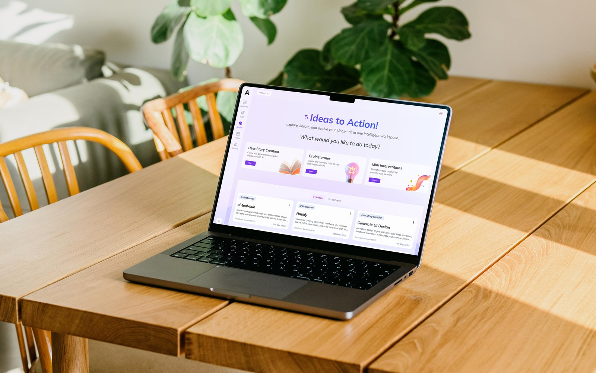
The whole thing, in six lines
Product Studio walks a product team from a raw idea to a plan: understanding, personas, SWOT, features, roadmap, then a summary to export.
An audit against our internal framework scored the old studio 49.9 out of 100, against a benchmark of 80.
Research named four problems: inconsistent UI, hard navigation, flat visualisation and accessibility gaps.
The journey map gave each one a sentence: “I’m not sure where to begin.” “I couldn’t add additional points.”
The redesign is one route from a single prompt to a summary, and every card the AI writes can be edited, or regenerated on its own.
Version 3 is in dev testing. There is no adoption figure yet, and this page does not invent one.
What the studio is for
Console is where agents get built. Product Studio is where a product team thinks.
Enterprise Console is where our agents are built and governed, and its Studios menu links out to separate applications. Product Studio is one of them: its own tab, its own access, no Console needed.
Its job is the part of product work that happens before anything is built: a product manager arrives with an idea and needs to leave with something a team can act on, who it is for, which features matter first, and when they ship.
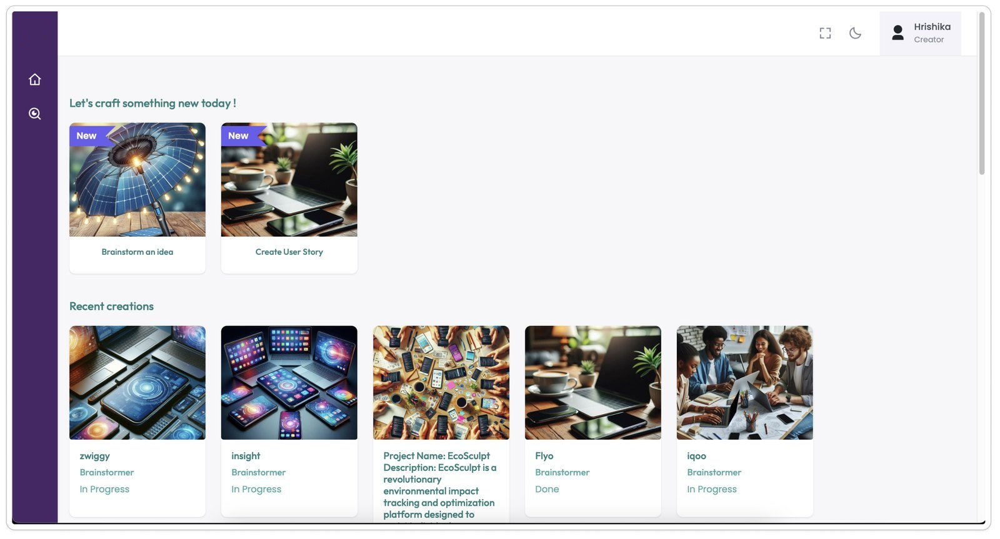
What the audit found
The studio worked. An audit scored it 49.9 out of 100.
We assessed the existing studio with an internal framework that scores an application on five parameters, usability, accessibility, aesthetics, content and performance, each against industry benchmarks. It scored 49.9 out of 100. The benchmark is 80.
A heuristic evaluation marked the problems on the screens themselves: a project name that could not be edited once created, elements that looked interactive and did nothing, a light mode switch that did not switch back, a dark theme without the contrast to read.
Grouped, they came to four: inconsistent UI, hard navigation, flat visualisation, accessibility gaps.
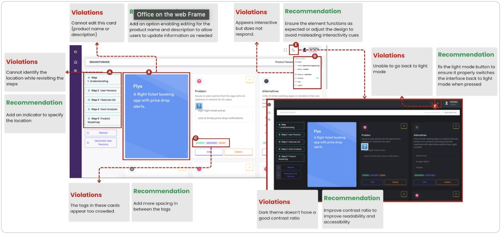
How we found out
Three sources, scored the same way, so the findings could be ranked instead of argued.
Three interviews with internal users and a survey, a screen-by-screen analysis against a UI framework, and two competitors: ProductPlan and Aha!
The competitors split neatly: ProductPlan is quick to learn and does little beyond roadmaps, Aha! covers strategy through to execution and takes real time to learn.
The most useful column was the last one, how each of them beats us.
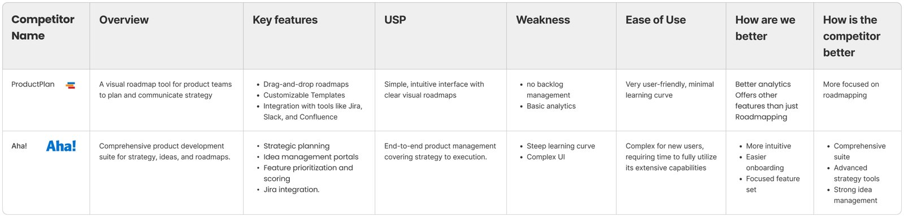
What users valued was just as clear: the studio fitted the way product management already worked. The strengths were in what it did. The problems were in how it felt to do it.
Who had to agree
Three groups, and two of them rated the problem P0.
The product director had the most riding on it, high interest and high influence, and named a slow-feeling workflow and an inconsistent interface.
Developers named a confusing flow and an unintuitive interface. Both came out P0. Product owners, medium on both counts, wanted interactivity and personalisation: P1.
| Group | Interest | Influence | Key concerns | Priority |
|---|---|---|---|---|
| Product director | High | High | Perceived slow workflow · UI inconsistency | P0 |
| Developers | High | Medium | Confusing user flow · unintuitive UI · inconsistent experience | P0 |
| Product owners | Medium | Medium | Limited interactivity · no personalisation | P1 |
The recommendations were ranked against that map:
- Improve navigation and flowHigh
- Make UI and interaction patterns consistentHigh
- Restructure the information architectureHigh
- Improve onboardingMedium
- Improve accessibility and responsivenessMedium
- Add personalisationLow
Ranked this way, the fixes everything else depended on came first. Personalisation, the one thing product owners asked for by name, came last.
Decision: one route, prompt to summary
The old studio was a set of tools. The new one is a route.
Mapped out, the old flow branched in ways that left people unsure where they were: several ways in, branches that doubled back, no marker for how far a project had got.
The journey map had it in a user's words: “I'm not sure where to begin.”
The redesigned flow is a line with one loop in it.
A project starts from a single prompt; the studio drafts the understanding, then personas, SWOT, features and the roadmap, one step at a time, and at every step asks whether this needs changes. If it does, you change it there.
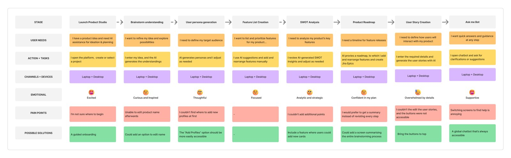
The prompt takes a workspace, a button that improves it before it runs, and attachments, so an idea that already lives in a document does not have to be retyped.
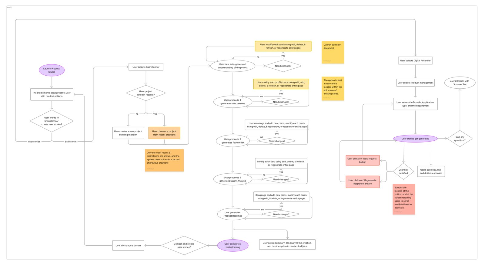
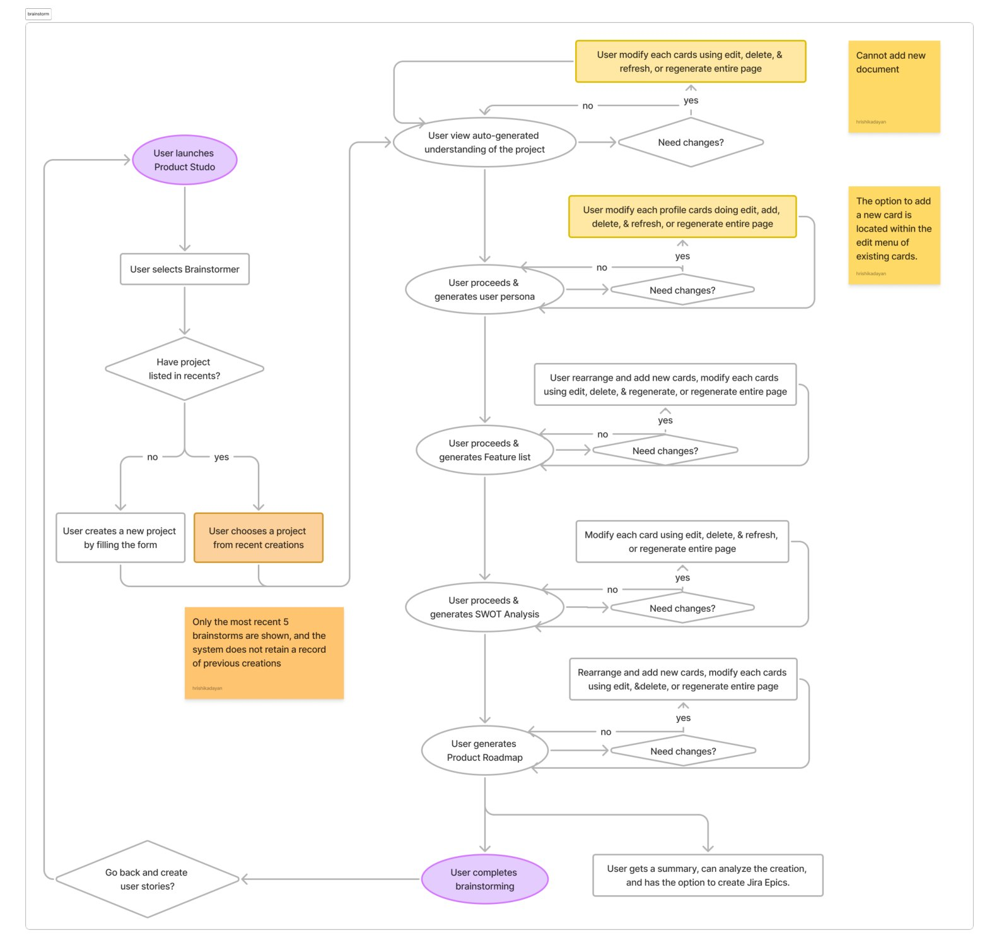
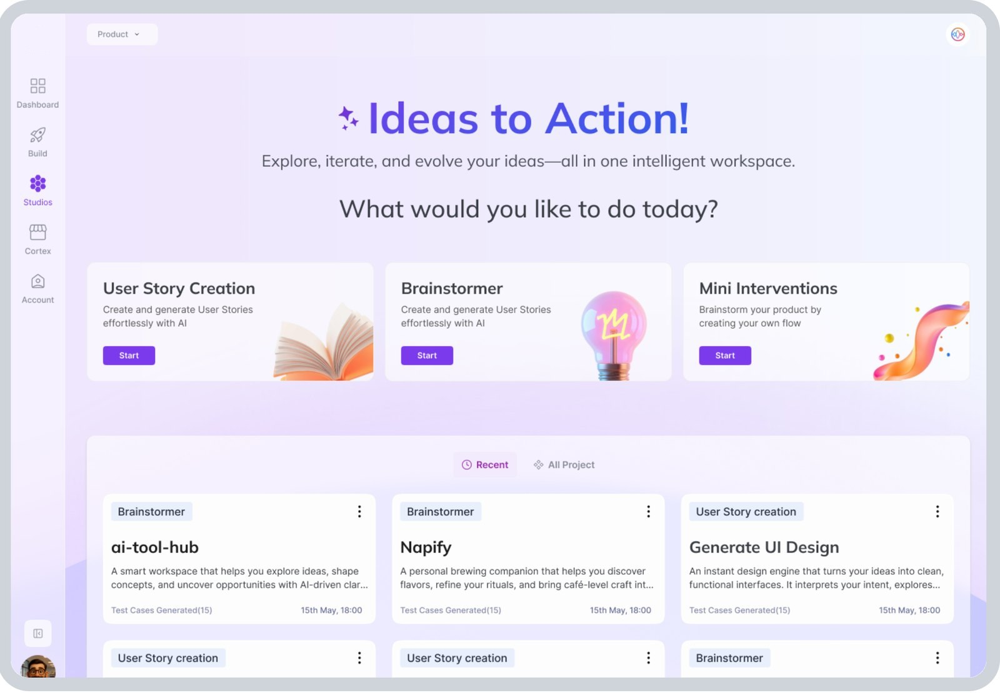
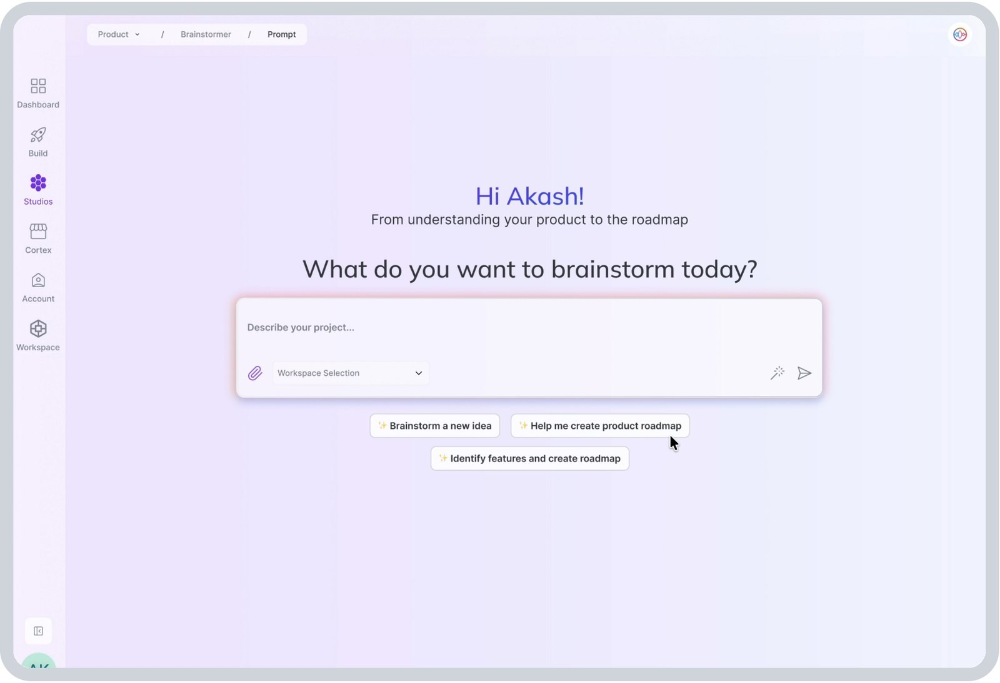
Decision: the AI drafts, the team edits
An answer you can only accept or regenerate from scratch is not a draft. It is a verdict.
The pain points were mostly one complaint in different places: a product name that could not be edited, nowhere to add a persona, no way to add a point the SWOT missed.
The output arrived finished, and the only way to change it was to ask for all of it again.
So every step is made of cards, and every card belongs to the team.
Understanding, personas, SWOT points, features and roadmap items are all cards, and any card can be edited in place, deleted, or regenerated on its own with a note on what to change.
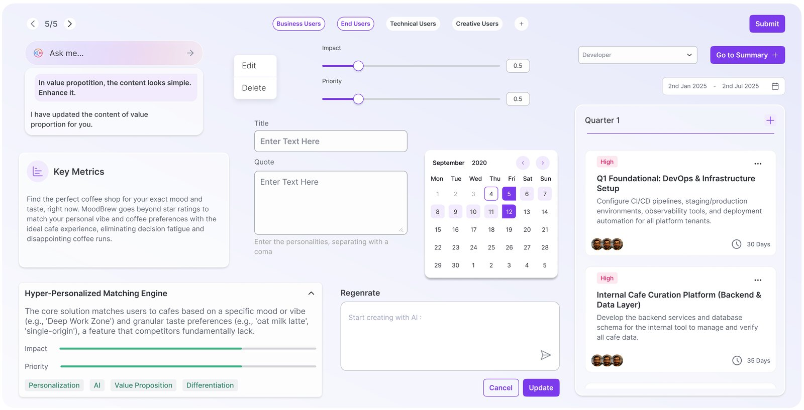
The AI's judgement stays visible and overridable: features arrive sorted into must, should and could have, and the Ask me panel takes a request in plain words when typing into a card is the wrong tool.
A plan the team has rewritten is no longer the AI's recommendation, which is the point, but it means the studio can never say the roadmap is what the model suggested. The summary has to say who wrote what.
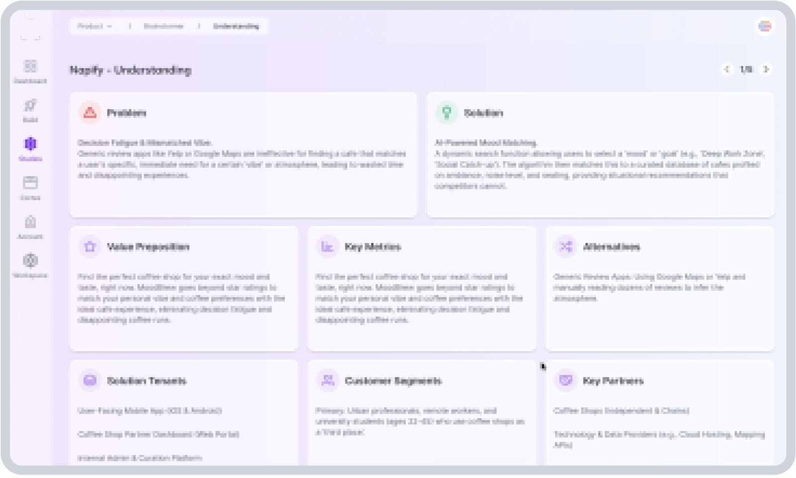
Understanding: the problem broken into cards, each one editable on its own. 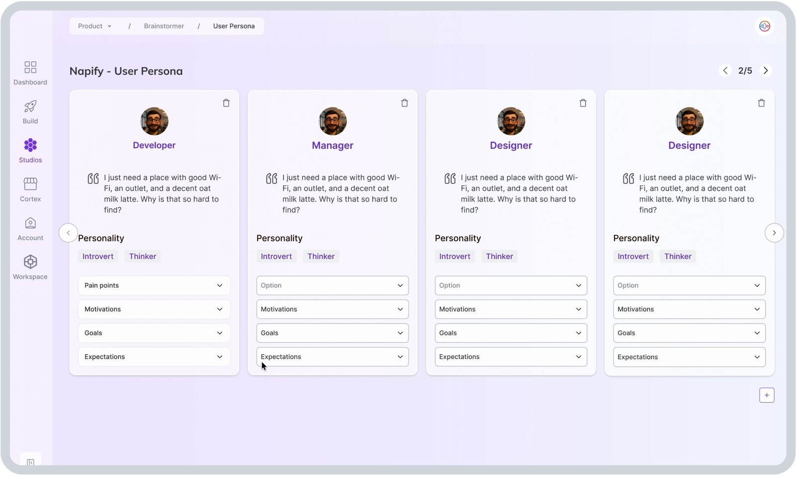
Personas, each an editable card, with room to add the one the AI missed. 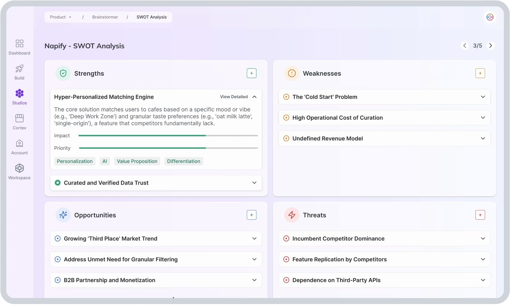
SWOT: every quadrant takes new points, and items carry an impact and a priority. 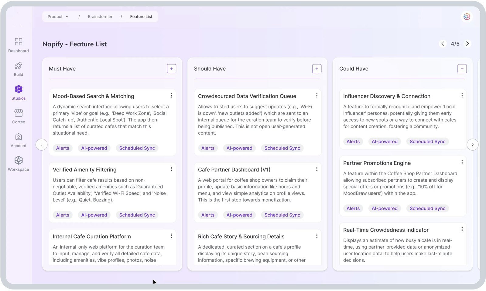
Features, already sorted into must, should and could have. 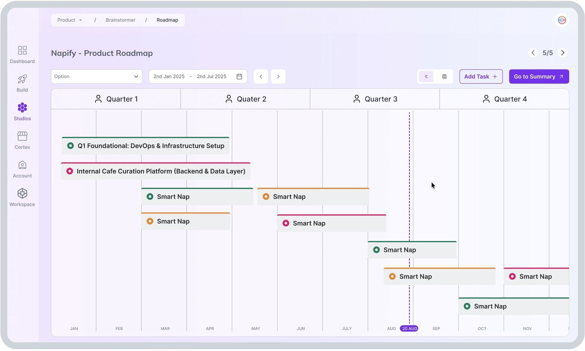
The roadmap, by quarter, rearranged by hand.
Decision: a studio that looks like one product
Inconsistency was first on the list, and the cheapest problem to leave unsolved.
The first goal I set was a visual language specific to the studio: one set of components, one type scale, one colour, used the same way on every screen.
The old studio had drifted screen by screen; the new one is assembled from a component board.
The colour is the violet the Play+ design system assigns to Product Studio, so the studio is recognisably itself while sharing its buttons, fields and cards with Console and the other studios.
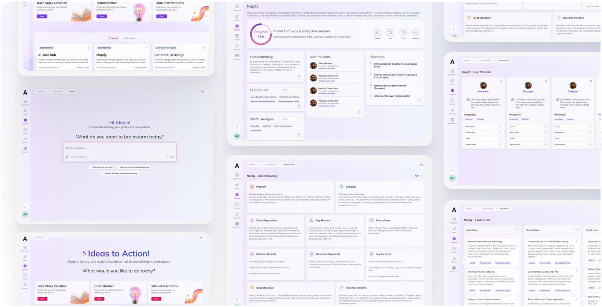
Several heuristic findings were fixed once, in the components, rather than screen by screen: tags got room between them, every step shows where you are in the sequence, and cards that looked editable now are.
What leaves the studio
The flow ends in a summary, because people asked for one.
“I would prefer to get a summary instead of revisiting every step” was on the journey map beside the roadmap stage.
The summary screen is the answer: understanding, personas, features and roadmap on one page, with exports to Jira, CSV or a zip file.
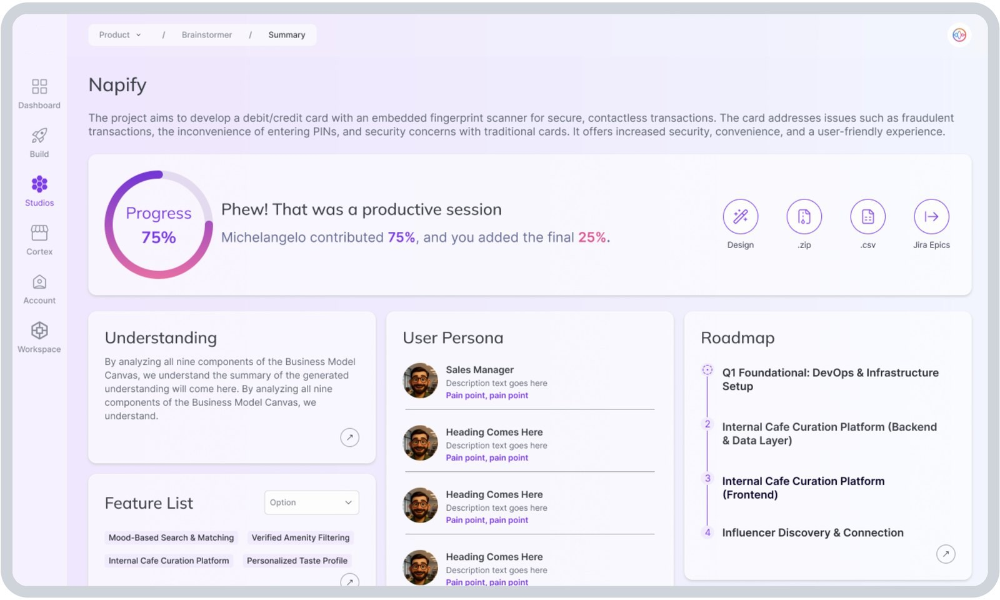
It also says who did the work. The session summary gives the AI its share of the result and the team theirs, which is the honest version of what the studio does.
What happened
Version 3 is in dev testing. I have no adoption figure to give you.
Version 2 is done and version 3 is in dev testing. It has not been in front of the product teams it was designed for, so there is no before-and-after figure, and I would rather say that than estimate one.
Two measures will say whether it worked. How often a card is edited against how often it is regenerated, which shows whether people trust a draft enough to fix it rather than reroll it. And how many projects reach the summary.
Questions about any of these decisions?
The part I’d most like to be pushed on is the editable output: where editing should stop, and whether a team that can change every card still trusts any of them.